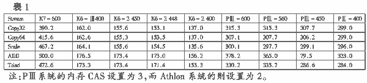
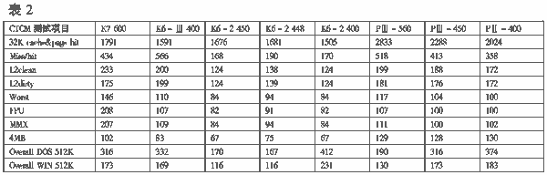

|
|
| 当前位置：电脑报电子版 > 1999 年 > 40 期 > 硬件周刊 > Athlon的秘密(一)——EV6总线和Cache |
| 《 Athlon的秘密(一)——EV6总线和Cache 》 |
| AMD于今年6月24日发布了Athlon CPU，并首次在CPU的主频上领先于Intel的PentiumⅢ。AMD这次使用了全新的Slot A架构，并推出了自己的主板芯片组，从而形成完整的CPU设计体系。Athlon以超强的整体性能向PentiumⅢ发出了最有力的挑战,AMD使用了什么秘方呢?
一、EV6总线和内存带宽 Athlon实际上是Alpha和X86系统的结合体，它使用了Digital公司Alpha系统遵守的EV6总线协议，外频速度达到200MHz。但在实际运行中它仍然使用100MHz的系统前端总线，工作在“2×”状态，意味着数据能够沿着系统时钟脉冲的上升沿和下降沿传送，程序按照系统前端总线执行指令，就像运行在200 MHz系统时钟下。在EV6协议中，每个指令周期能处理24个系统指令的请求，而X86系统的GTL＋协议则仅能处理6个。但实际上，在前端总线钟频下运行的内存和芯片组是不依赖于EV6总线速度的，SDRAM仍工作在100 MHz的频率下。那么Athlon号称200 MHz的 EV6总线只是一个卖点吗？事实并非如此。下面让我们来测试系统中CPU和内存的性能表现。Stream是一个简单实用的、用来测试内存带宽和数据传输率的软件。在这次测试中，Cache（高速缓存）对它的影响非常有限，而且无论打开或关闭二级高速缓存（L2 Cache），它的得分值都是相同或非常接近的。测试数据如表1。  Athlon在这个性能测试中全面胜出，要归功于它的EV6总线。大家可以注意，它的Copy64的数据传输得分看起来比它的Copy32更好。显而易见，使用64位的数据传输时，EV6总线能更好地发挥它的高效率。而PⅢ在这方面，Copy64并没有显示出优势。肯定有人会提出疑问，它的基准测试是真实的吗？答案是肯定的，因为高速缓存并不是任何时候都可以起作用的。举一个例子，如果我们考虑图片编辑的话，把图片的每个像素点都加载到高速缓存中通常是不可能的，因为处理过程需要大量的数据变换，以及多边形的数据信息的转换，要完成图像编辑只能依靠内存来获得更快的存取。这也是Intel通过SSE指令集允许数据即使没有被放入高速缓存内，仍能够提供更强的图形性能的原因。AMD在Athlon处理器中也采用许多类似措施，增加许多高速缓存的控制指令以增强3DNow!的性能。 可以看到，现在实际是内存速度成为系统的主要瓶颈，K7－600和 PⅢ－600的主频运行速度都比内存工作频率要快6倍，这样提高内存带宽将成为系统提升的首要因素之一。按AMD的设计思想，Athlon的良好表现将获益于更快的内存模组，可以享受到工作在200 MHz的EV6总线的带宽（它的数据传输带宽达到1.6 GB/s），目前工作在100 MHz 的DDR SDRAM（双速率同步内存），它在每个时钟周期可以输出两个数据，其带宽就可达100 MHz ×2（双速）×8字节=1.6 GB/s。显然Intel也意识到这个问题，它力推的DRDARM，虽然可以工作于400MHz，但其带宽也才达1.6GB/s，由于GTL＋协议的限制，外部钟频只能工作在133MHz，带宽只有1.06GB/s。而EV6协议支持400MHz的系统总线和DDR SDRAM的266MHz工作频率，因而EV6协议具有很好的发展前景现在大家可以理解到EV6协议200MHz系统前端总线的实际意义，它实际是内存的数据直接传输到处理器的工作频率，而并非实际的系统前端总线的时钟频率。 二、高速缓存 1．高速缓存管线（Cache Line）。高速缓存（Cache）实际是许多高速缓存管线（Cache Line）的集合，每根高速缓存管线是一些字节的组合，在Athlon内部，每根管线占64字节。在一个直接映射的高速缓存（direct－mapped cache）里，每根高速缓存管线都可以映射到主内存（Memory）某一个确定的区域。我们假定Athlon的D－Cache（Data－Cache，数据缓存）采用直接映射方式，它的D－Cache容量为64KB，由于每根缓存管线包含64个字节，因此它将有64KB/64B=1024根高速缓存管线。现在，如果你的系统里是128 MB的内存，每个高速缓存管线将映射到的内存区域为128 MB/1024=128K。每个内存块区按每根管线的64个字节再精确细分，每个管线字节将映射到2K的内存区域（128K/64字节）。例如某个内存存储单元是1～64字节，那么这个存储器单元从2K＋1到2K＋64共享一根相同的高速缓存管线。对于直接映射方式的高速缓存，如果你需要内存中的数据映射到同一个Cache，那么就可能出现一些问题，Cache原先的一些数据就会因容量溢出而被清除。实际上，直接内存映射的优势在于能够简单快速确定某一内存区域是否被某根高速缓存管线Cache到了。 对于Athlon处理器，它的128KB一级高速缓存（L1－Cache）是由64KB D－Cache和64KB I－Cache（Instructions－Cache指令高速缓存）组成的复合结构体系。它的D－Cache是2路关联工作方式，这意味着两个管线映射到一个内存区域，这样的话高速缓存管线可映射2倍的内存区域。如果你需要从映射到同一个高速缓存管线中的两个不同内存单元获得信息，那么其中之一就可以指向数据信息的位置。而当内存单元被两个不同的高速缓存管线映射，那就意味着你必须搜索两次才能确定所需要的信息是否已被Cache(编者：有关直接映射Cache和2路相关Cache的特点及概念，请详见今年第6期《电脑报》第17版)。现在理论已经谈得够多了，我们让看看这些会带来什么样的影响。 2．Cache容量和工作频率 是否高速缓存容量越大越好呢？对于大容量缓存，在一个时钟周期内尝试着从高速缓存获得数据返回的请求是非常困难的。实际上，对于现在的CPU内置高速缓存，需要两个或更多的时钟周期以获得数据。在奔腾级的处理器中，最小只有8 KB L1 D－Cache的RISE MP6处理器执行指令返回数据只需一个时钟周期，而32KB L1 D－Cache的K6系列处理器则需要2个时钟周期，新一代拥有64KB D－Cache的Athlon处理器则可能需要3个周期。幸运的是，像Athlon这样的新一代处理器，它的L1－Cache采用管道流水线结构，因此L1－Cache能在每个时钟周期都返回数据。 3．Cache的性能测试 CTCM是一款非常有效地测试高速缓存的工具，它能够测试使用L1 Cache和L2 Cache查寻数据所表现的性能。表2中，第1项是指在L1和L2 Cache中均能找到所需数据时的性能，第2项和第3项显示所需大部分数据只在L2 Cache中时的性能，而“worst”则表示没有设定Cache时的性能。CTCM也能测量使用FPU或MMX指令的性能表现。 Athlon在表2的测试数据上看来完全失败了，尤其在L1－Cache测试上，PⅢ系列全面超过Athlon，虽然它运行的主频要比Athlon低。这其中有两个可能的原因：一个是Athlon采用的64位高速缓存管线，另一个是Athlon更适用64位的数据存取。而目前大多数的程序多是针对32位缓高速缓存管线优化设计的。既然这样，为什么Athlon还使用64位缓存管线呢？大家知道，高速缓存的工作原理实际是一些数据的重复使用，但你存取内存单元的时候它是确实存在的，而当你需要从它邻近的内存单元读取数据的时候，因为64的管线可以设置2路关联，相近内存单元的数据可能被Cache的机会也要大得多，利用64字节管线缓存可以比内存更快地把数据送入CPU处理，意味着它运行起来速度更快。但由于程序设计针对32位优化，而且Athlon的执行指令并不能被基于PentiumⅡ/Ⅲ指令优化的程序而识别，它也无法在性能上取得更多的优势，因而出现这种反常的情况。在上述测试中，可以看到Athlon的MMX分值和FPU分值是非常出色的，几乎是PⅢ的两倍。在没有设置L1－Cache和L2－Cache的“wrost”测试的分值中，EV6总线的数据传输能力仍比PⅢ和 K6－Ⅲ更快。 三、结语 Athlon作为下一代CPU，需要一些特别的优化程序才能真正挖掘它的潜力，对于32位和高速缓存管线优化大大地限制了它的性能发挥。这也就能解释我们为什么在某些基于游戏、FPUmark以及其他依赖于L1－Cache性能的基准测试中，Athlon执行效率只比PⅢ快10％的原因了。而在AMD提供的测试报告中，采用了SPECfp这个性能测试软件，测试CPU同时打开L1－Cache和L2－Cache的表现，Athlon在性能上甚至超出Intel Xeon处理器40％，可以肯定的是，这个软件不会针对PentiumⅡ/Ⅲ优化，所以Athlon才能获得如此优异的成绩。 |
| 下载本期推荐软件 | 页 首 |
| 《电脑报》版权所有，电脑报网站编辑部设计制作发布 |